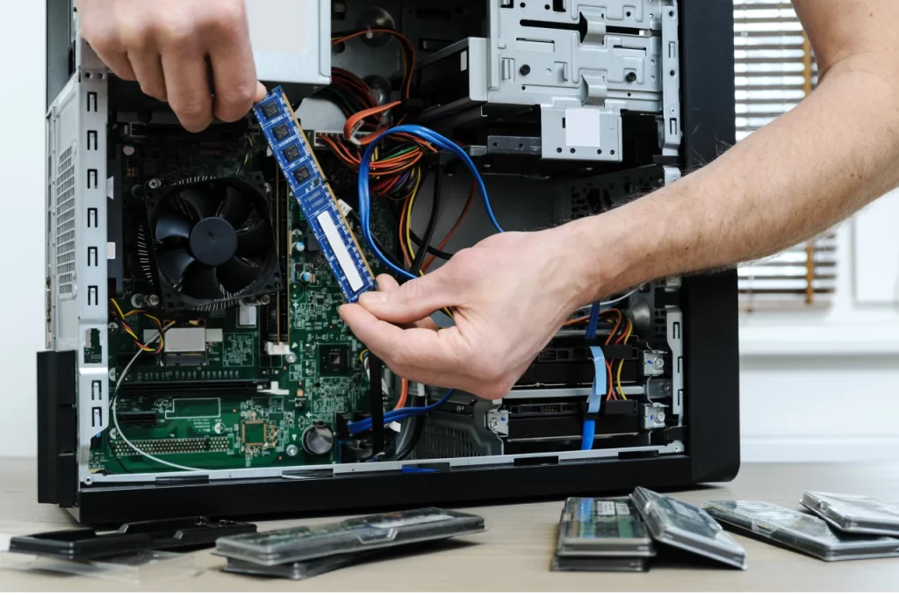
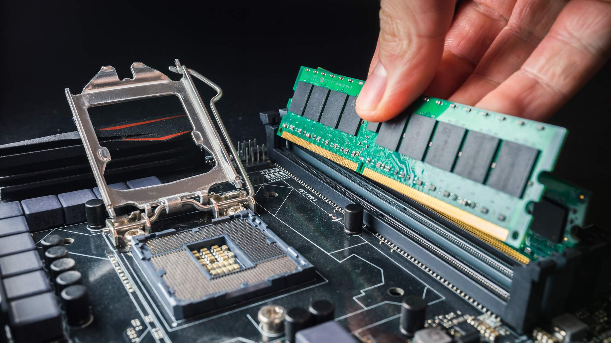

Manutenção de computadores, upgrades e criação de sites profissionais
Assistência técnica especializada em manutenção de computadores, notebooks e desenvolvimento web, oferecendo soluções rápidas, seguras e eficientes. Trabalhamos com diagnóstico preciso, transparência e compromisso com a qualidade, garantindo confiança e alto desempenho para os equipamentos e projetos dos nossos clientes. 🔧
Identificação rápida e correta dos problemas, evitando gastos desnecessários para o cliente.
Serviços realizados com agilidade para que o cliente volte a utilizar seu equipamento o mais rápido possível.
Oferecemos manutenção de computadores e notebooks, além do desenvolvimento de sites e soluções digitais.
Explicamos cada problema e solução de forma clara, garantindo segurança e confiança em todos os serviços.

Diagnóstico e reparo de computadores e notebooks para restaurar o funcionamento correto.
Melhoria no desempenho do sistema, remoção de arquivos desnecessários e ajustes para maior velocidade.

Instalação de SSD, memória RAM e outros componentes para aumentar o desempenho do computador.
Criação de sites modernos, rápidos e responsivos para empresas e profissionais.
Entre em contato agora e resolva seu problema.